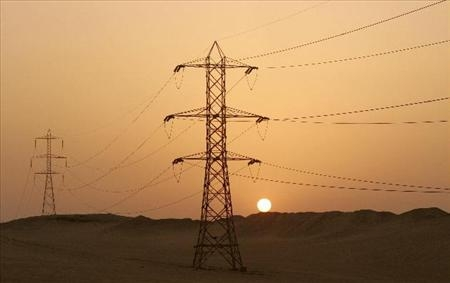

1- Como siempre empiezemos el dia con un evangelio, ya que, no podemos iniciar el día sin el, hoy leimos ´´el señor es mi pastor ´´ aprendiendo que el siempre estará conmigo y nunca me defraudara
2- El Señor es mi pastor
Salmos 23 Dios Habla Hoy (DHH)
>(1a) Salmo de David.23 (1b) El Señor es mi pastor;
nada me falta.
2 En verdes praderas me hace descansar,
a las aguas tranquilas me conduce,
3 me da nuevas fuerzas
y me lleva por caminos rectos,
haciendo honor a su nombre.
AMEN UWU
Un circuito eléctrico es una combinación de elementos conectados entre si, que generan, transportan electricidad por medio de conductores unidos de sus extremos. También es un camino cerrado en donde pasan electrones que consta de generador, hilo conductor, receptor y elementos de control.
COSAS COMO ESTAS¡ :D



 1-La combinación de receptores en serie y en paralelo da lugar a
conexiones mixtas que pueden complicarse mucho. Para resolver estos circuitos
se debe ir simplificando las resistencias equivalentes de cada tipo de asociación
hasta llegar a una única resistencia total, equivalente a todo el montaje original
2-En los circuitos en serie los receptores se conectan una a continuación del
otro, el final del primero con el principio del segundo y así sucesivamente.
1-La combinación de receptores en serie y en paralelo da lugar a
conexiones mixtas que pueden complicarse mucho. Para resolver estos circuitos
se debe ir simplificando las resistencias equivalentes de cada tipo de asociación
hasta llegar a una única resistencia total, equivalente a todo el montaje original
2-En los circuitos en serie los receptores se conectan una a continuación del
otro, el final del primero con el principio del segundo y así sucesivamente.
Antes de irte por favor compra mi producto¡ ;D TE ENCANTARA¡

BAY BAY HASTA LA PROXIMA :D